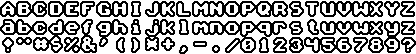

Graphics
Font
The font has to be of a fixed-width and height for all letters, ie. the size of the letters can be anything, but has to be constant for all letters of a given font. The current font is (based on the old one, just 'gaussion blur (iir) 2', 'threshold 112', 'border 2'). It would be ideal to have a more handwriting-like look of the font, but since that can be quite a bit of work to create and since the current one doesn't look all that bad a better font isn't a requirement, but would still be nice to have.
